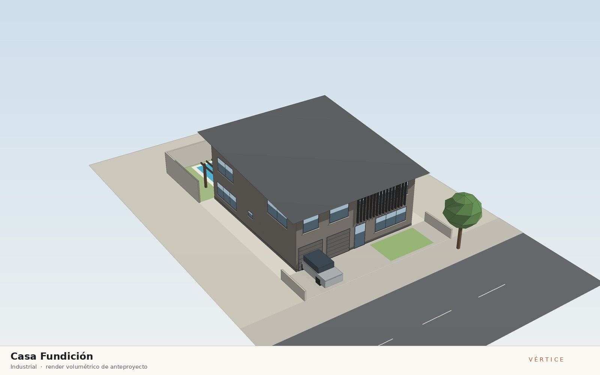
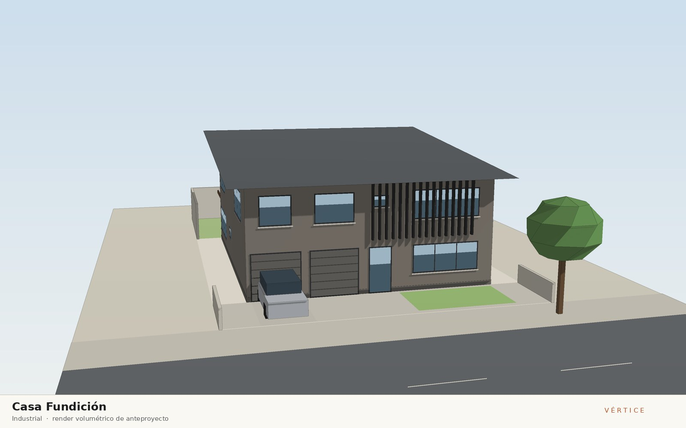
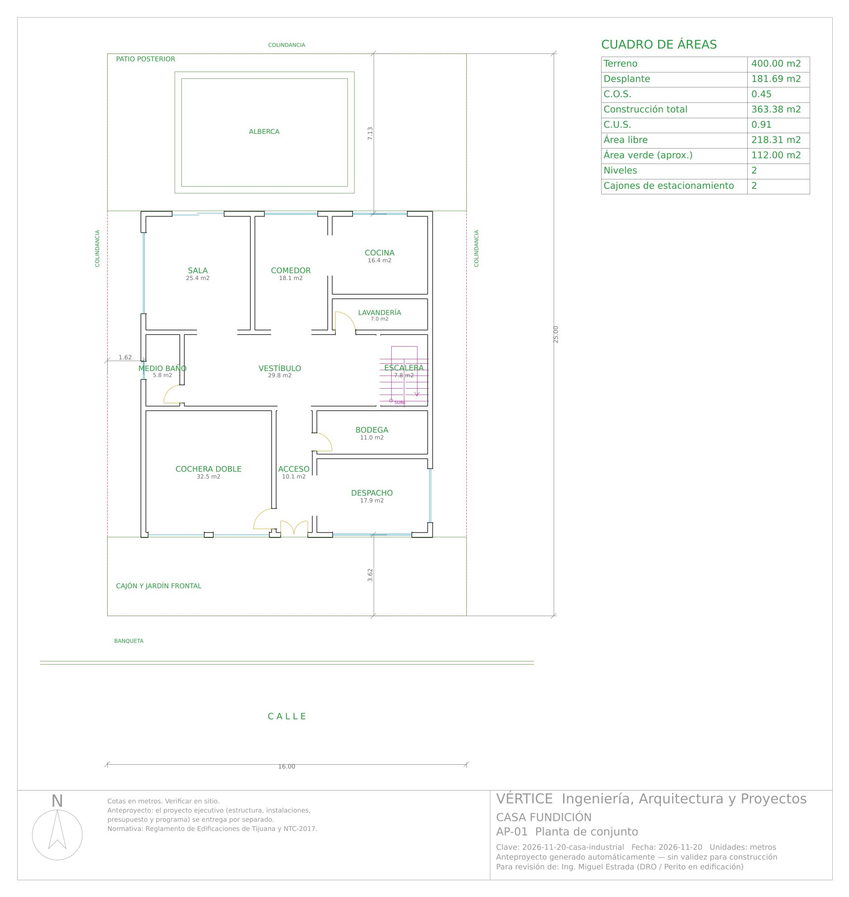
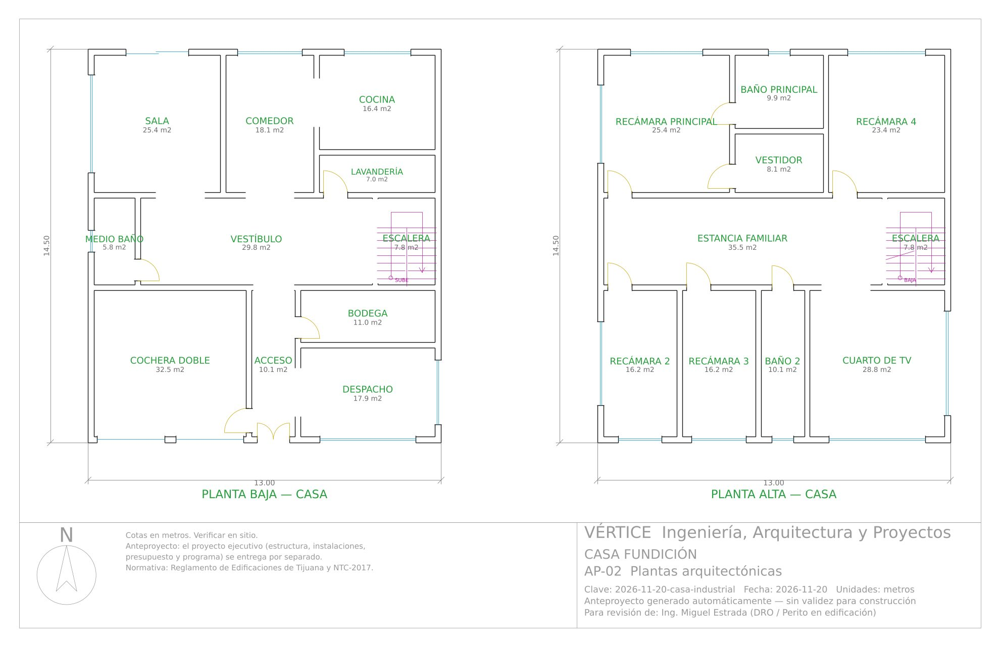
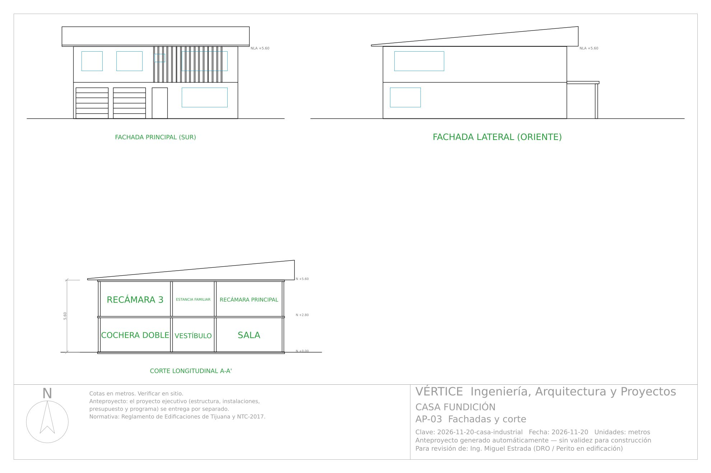

20 de noviembre de 2026 · Casa habitación
Casa Fundición
Corriente: Industrial

Concepto
Vivienda industrial en un lote de 16 x 25 m en Tijuana que reinterpreta las fundiciones y bodegas de la Mesa de Otay: un volumen de block aparente gris cemento, sobrio como una nave, coronado por una cubierta ventilada de lámina a una agua con alero amplio que baja hacia la calle y sube al patio norte; la cámara de aire sobre la losa disipa el calor del verano y el alero protege los vanos de la lluvia de invierno. En la planta alta sur, una celosía de lamas de acero negro filtra el sol duro del mediodía y la tarde frente al cuarto de TV y al baño 2 y da privacidad hacia la calle sin cerrar la vista. Al norte, una pérgola de acero con vigas de madera termotratada prolonga la sala hacia el patio posterior y tamiza el sol alto. Al interior, la escalera abierta al vestíbulo separa la zona pública de la privada y la planta baja se abre de sur a norte para la ventilación cruzada con la brisa marina del poniente.
Dictamen del arquitecto
- Terreno de 16.00 x 25.00 m (400 m²); casa de 13.00 x 14.50 m a paños (12.75 x 14.25 m a ejes) en 2 niveles, 363.4 m² construidos con desplante de 181.7 m²: COS 0.45 y CUS 0.91 (por verificar con el PDU de Tijuana). Cochera doble de 5.80 x 5.60 m (2 cajones) y patio posterior al norte con pérgola de 12.75 x 2.50 m.
- Lenguaje industrial con tres rasgos que trabajan juntos: cubierta ventilada de lámina a una agua (pendiente 12 %) con alero amplio de 0.90 m que baja a la calle y sube al patio norte; celosía de 16 lamas de acero negro (h = 2.80 m) en la planta alta sur frente al cuarto de TV y el baño 2; y pérgola posterior de madera termotratada sobre postes de acero que prolonga la sala al patio. Se descartaron 'estructura_aparente' (en mampostería confinada no hay marcos que exponer) y 'muro_acento' (la fachada sur no deja un paño ciego ≥ 0.90 m); el motor ahora avisa en ambos casos en lugar de omitirlos en silencio.
- Recorrido: acceso de 1.80 x 5.60 m con puerta doble de 1.20 m que reparte a cochera, bodega (11.0 m²) y despacho (17.9 m²) → vestíbulo (29.8 m²) con medio baño (5.8 m², sin ventana: extractor obligatorio), lavandería (7.0 m²) y escalera en U → sala (25.4 m², cancel corredizo de 2.30 m al patio), comedor (18.1 m²) y cocina (16.4 m²) comunicados. Escalera de 1.15 m de ancho, peralte 17.5 cm, huella 29.0 cm (2p + h = 64 cm).
- Planta alta: estancia familiar (35.5 m²) que reparte a recámara principal (25.4 m², 4.84 x 5.25 m) con vestidor (8.1 m²) y baño (9.9 m²), recámara 4 (23.4 m²) al norte, recámaras 2 y 3 (16.2 m², 2.90 x 5.60 m) con clóset, baño 2 (10.1 m²) y cuarto de TV (28.8 m²) al sur. Todas las recámaras ≥ 2.70 m de lado con ventana al exterior; altura libre 2.66 m en planta baja y 2.67 m en planta alta (≥ 2.30 m).
- Cédula de acabados: porcelanato 60x120 efecto concreto pulido en locales secos y escalera, porcelanato antiderrapante en baños, concreto pulido en bodega y escobillado en cochera; 319.9 m² de piso iguales en planos y presupuesto. Motor: la cubierta de lámina a una agua se presupuestaba y anotaba en A-04 con triplay, fieltro, cumbrera, limatesas y canalón perimetral; ahora va sobre largueros con aislante, con caballete y canalón sólo en el alero bajo donde nacen las bajadas. El muro de acento ya se cuantifica en el presupuesto.
Dictamen de ingeniería
- Veredicto: construible conforme a norma — 0 errores y 0 avisos en las 28 verificaciones de coordinación, con los ajustes que hizo el ciclo arquitectura–estructura: vanos abiertos entre locales limitados a 1.80 m, muros en ambas direcciones en block de 20 cm (Y por carga vertical, X por ser la dirección más débil) y 2 muros de planta alta sin apoyo continuo especificados como divisorios ligeros de tablaroca; castillos sin interferir con vanos. Sujeto a los supuestos indicados abajo.
- Mampostería confinada (Q = 1.5): castillos K-1 15x20 (64 en planta baja y 58 en planta alta), dalas de desplante, cerramiento y remate, trabe de carga T-1 30x50 (L = 5.60 m, 5 #6, Mu 20.7 t·m, Vu 14.8 t) sobre la cochera doble apoyada en columna C-1 15x30 (4 #4, P serv 10.6 t) entre portones, y 17 cerramientos T-2 a T-18 de 15x30 a 20x40. Método simplificado NTC: X VR 94.9 t ≥ Vu 76.3 t; Y VR 122.8 t ≥ 76.3 t. V basal 69.4 t con c = 0.213 supuesto y T = 0.18 s.
- Losas macizas de 14 cm en entrepiso (≥ 13.1 cm) y 13 cm en azotea (≥ 12.9 cm); la cubierta de lámina (30 kg/m²) está incluida en la carga muerta de azotea. Zapatas corridas h = 20 cm, #4 @ 33: ZC-1 perimetral B = 50 cm (q = 5.38 t/m², excéntrica en los linderos) y ZC-2 interior B = 75 cm (q = 10.39 t/m², 87 % de la capacidad) contra una q adm supuesta de 12 t/m² a -0.80 m: requiere estudio de mecánica de suelos y confirmar el espectro sísmico del sitio. Cuantificación: 7,970 kg de acero (21.9 kg/m²) y 91.2 m³ de concreto.
- Instalaciones: 6 ocupantes, 22 UM (1.21 L/s), toma Ø13 mm, alimentación Ø25 mm, cisterna de 2 m³ con hidroneumático de 1/2 HP y calentador de paso a gas; 25 UD, bajadas del baño 2 (al acceso) y del baño principal (al comedor) junto a muro, a forrar en ducto, colector Ø100 mm PVC al 2 % a la red CESPT con ventilación Ø50 mm; 234 m² de captación, 6.5 L/s a 2 bajadas Ø100 mm (≈ 9.0 L/s) en la fachada sur, bajo el canalón del alero bajo, separadas del sanitario; 18 circuitos (16,500 W instalados, 11,550 W de demanda, 58.3 A), interruptor general 2P-100 A, desbalance 0.6 %; gas LP con tanque estacionario de 500 L en el patio a nivel de piso (no sobre la cubierta), ventilado y a más de 3 m de flamas. Factibilidades de CESPT y CFE por tramitar.
- Presupuesto de $1,950,611 + IVA ($2,106,660 con IVA fronterizo; $5,368/m²) y programa de 24 semanas (141.5 días hábiles); celosía de acero (16 pzas), pérgola, cubierta de lámina (235.2 m²), cancelería, portones, tanque de gas y acabados quedan en la hoja "Por cotizar" hasta tener cotización de proveedores de Tijuana.
Materiales
Muros de block de concreto aparente gris cemento con junta remetida y sellador hidrofugante, colindancias con aplanado e impermeabilizante; celosía de lamas de acero con pintura epóxica negro mate en planta alta de la fachada sur; pérgola de vigas de madera termotratada sobre postes de acero negro en el patio posterior; cubierta ventilada a una agua de lámina engargolada calibre 24 sobre largueros de acero con aislamiento térmico y alero amplio, sobre losa impermeabilizada; piso de porcelanato 60x120 efecto concreto pulido; cancelería tipo fábrica de aluminio negro con vidrio claro de 6 mm
Vistas

Anteproyecto — descargas
Láminas del anteproyecto






Proyecto ejecutivo
Proyecto ejecutivo completo — 17 láminas. Se entrega por separado; no se publica en esta galería.
Revisión de coordinación arquitectura–estructura–instalaciones–acabados y normativa: Sin errores · 0 avisos en 28 verificaciones.
Arquitectónico
- A-01 Planta de conjunto
- A-02 Plantas arquitectónicas amuebladas
- A-03 Plantas acotadas a ejes
- A-04 Planta de azotea
- A-05 Fachadas
- A-06 Cortes arquitectónicos
- A-07 Cancelería y acabados
Estructural
- E-01 Planta de cimentación
- E-02 Losas, trabes y castillos
- E-03 Detalles estructurales
- E-04 Cuantificación de acero y concreto
Instalaciones
- IH-01 Instalación hidráulica
- IS-01 Instalación sanitaria y pluvial
- IE-01 Instalación eléctrica
- IG-01 Instalación de gas LP
- IH-02 Isométrico hidráulico
- IE-02 Cuadro de cargas y diagrama unifilar
Incluye: Memoria técnica (Word/PDF) · Presupuesto (Excel) · Programa de obra (Excel y Gantt) · Juego de planos (PDF y DXF)
Revisión de calidad
Sin errores · 0 avisos
Cuadro de áreas
Ver los 21 espacios
| Bloque | Nivel | Espacio | Medidas (m) | Área (m²) |
|---|---|---|---|---|
| Casa | Planta baja | Cochera doble | 5.80 x 5.60 | 32.48 |
| Casa | Planta baja | Acceso | 1.80 x 5.60 | 10.08 |
| Casa | Planta baja | Despacho | 5.15 x 3.47 | 17.88 |
| Casa | Planta baja | Bodega | 5.15 x 2.13 | 10.96 |
| Casa | Planta baja | Medio baño | 1.70 x 3.40 | 5.78 |
| Casa | Planta baja | Vestíbulo | 8.75 x 3.40 | 29.75 |
| Casa | Planta baja | Escalera | 2.30 x 3.40 | 7.82 |
| Casa | Planta baja | Sala | 4.84 x 5.25 | 25.44 |
| Casa | Planta baja | Comedor | 3.44 x 5.25 | 18.08 |
| Casa | Planta baja | Lavandería | 4.46 x 1.57 | 7.03 |
| Casa | Planta baja | Cocina | 4.46 x 3.67 | 16.40 |
| Casa | Planta alta | Recámara 2 | 2.90 x 5.60 | 16.24 |
| Casa | Planta alta | Recámara 3 | 2.90 x 5.60 | 16.24 |
| Casa | Planta alta | Baño 2 | 1.80 x 5.60 | 10.08 |
| Casa | Planta alta | Cuarto de TV | 5.15 x 5.60 | 28.84 |
| Casa | Planta alta | Estancia familiar | 10.45 x 3.40 | 35.53 |
| Casa | Planta alta | Escalera | 2.30 x 3.40 | 7.82 |
| Casa | Planta alta | Recámara principal | 4.84 x 5.25 | 25.44 |
| Casa | Planta alta | Vestidor | 3.44 x 2.36 | 8.14 |
| Casa | Planta alta | Baño principal | 3.44 x 2.89 | 9.94 |
| Casa | Planta alta | Recámara 4 | 4.46 x 5.25 | 23.43 |
Anteproyecto conceptual generado por el motor Vértice. El predimensionamiento estructural y los cálculos de instalaciones son preliminares y no sustituyen la memoria de cálculo definitiva, el estudio de mecánica de suelos ni la revisión y firma del DRO y corresponsables.